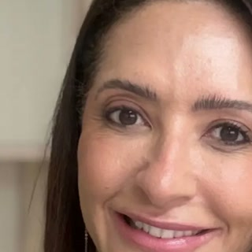

Início · Sobre
Sobre a Dra. Aline: pele, cabelo e naturalidade.
Consultório em Vilas do Atlântico, Lauro de Freitas.

Dra. Aline LopesDermatologia · CRM-BA 25364 · Lauro de Freitas
Quem é
A médica
- Dermatologia clínica e estética · CRM-BA 25364.
- Atende pele, cabelo e o cuidado com o passar do tempo.
- Consultório no Empresarial Ônix, Vilas do Atlântico.
- Atendimento com hora marcada.
O cuidado
Como ela pensa o cuidado
“Meu compromisso como dermatologista é cuidar de você com honestidade, ciência e atenção, do primeiro atendimento ao acompanhamento.”
Dra. Aline Lopes
A pele
A pele e a rotina
“A pele raramente reage ‘do nada’. Quando começamos a investigar a rotina, a resposta quase sempre aparece.”
Dra. Aline Lopes
Agende
Pele, cabelos e naturalidade. Comece pela avaliação.
Consulta com hora marcada no Empresarial Ônix, Vilas do Atlântico. Fale pelo WhatsApp (71) 99913-9963.